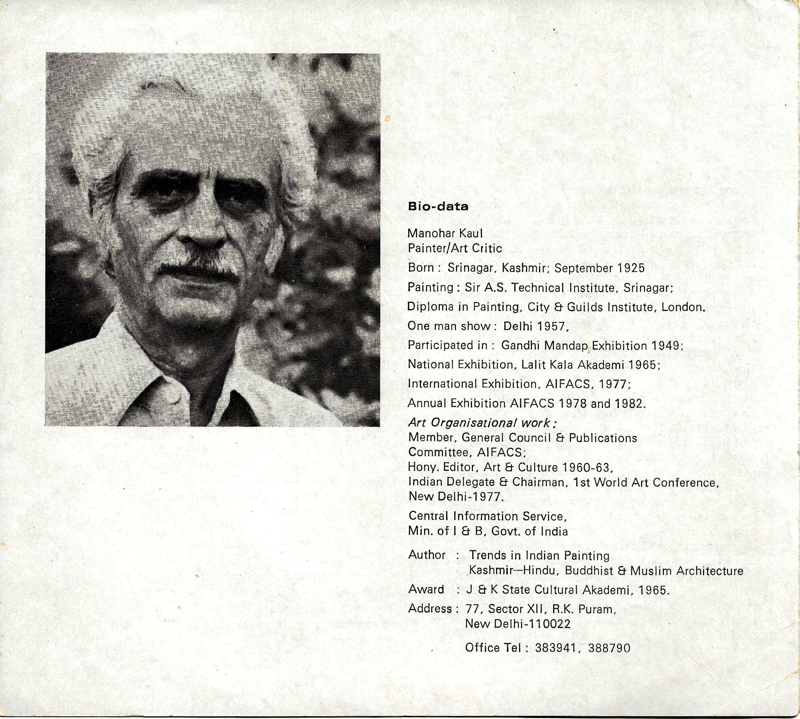
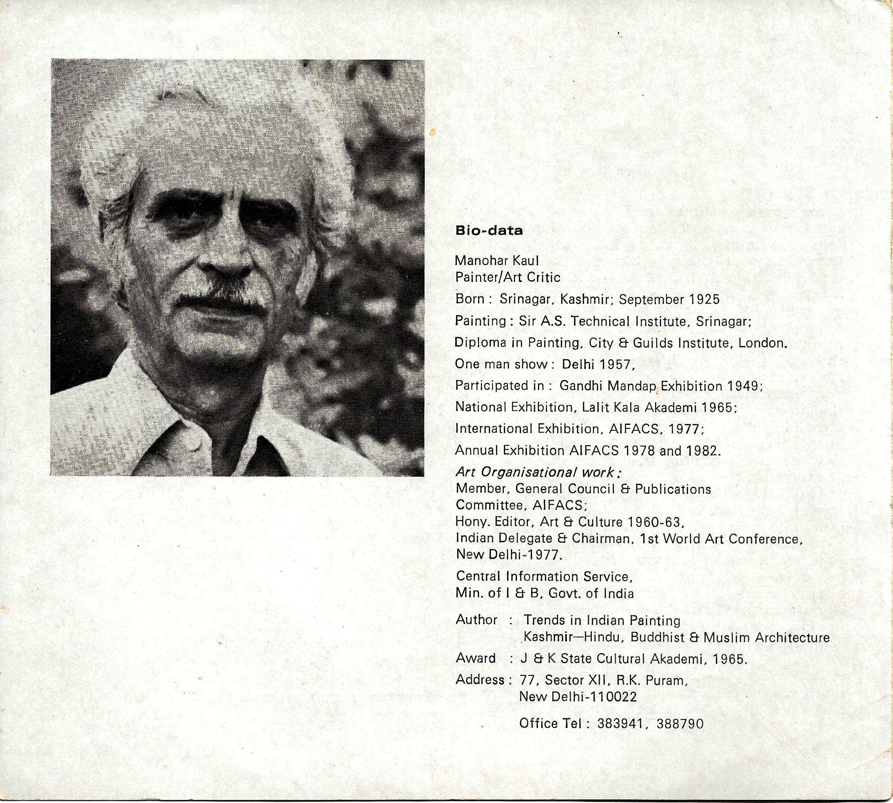
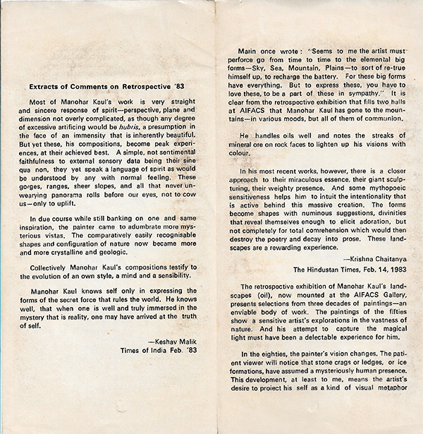
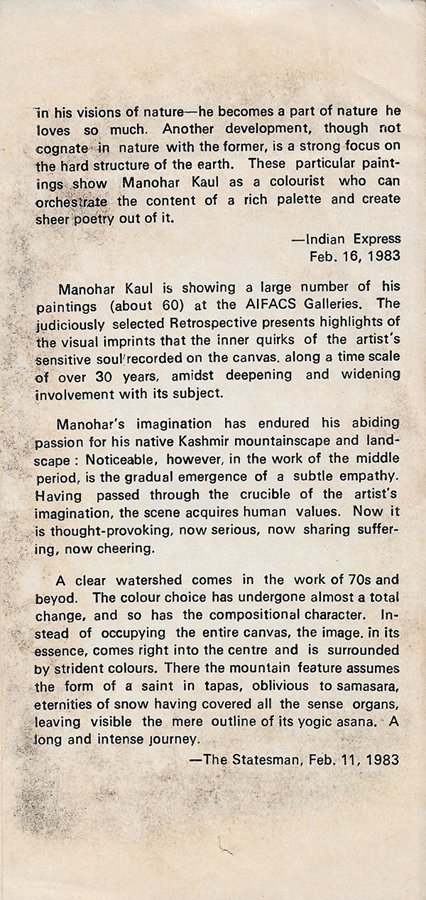

Retrospective Exhibition of Paintings
New Delhi, 1983
Spanning three decades of devotion, this retrospective reveals Manohar Kaul’s evolving communion with the mountains — from their sensory presence to their mythic essence. His paintings move from faithful observation to luminous, spiritual visions shaped by empathy, silence, and inner truth.
Catalogue
 

Press Reviews

Manohar and the Mountain
If Manohar did not go to the mountain, the mountain would have come to Manohar. The play of light on the Himalayas creates changes beyond imagination. To this is added the inner vision of the artist.
...rest of review content...
Extracts of comments in the press for this exhibition
 Exhibition Highlights
Archival photographs from the 1983 retrospective, showing Manohar Kaul with fellow artists, friends, and visitors